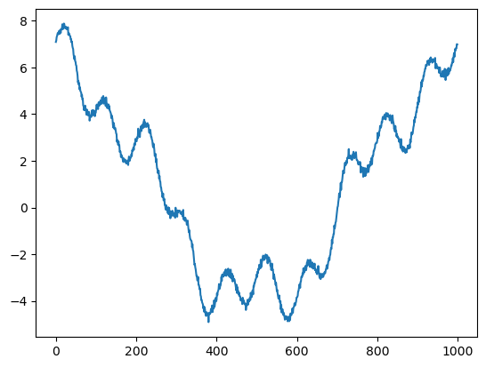
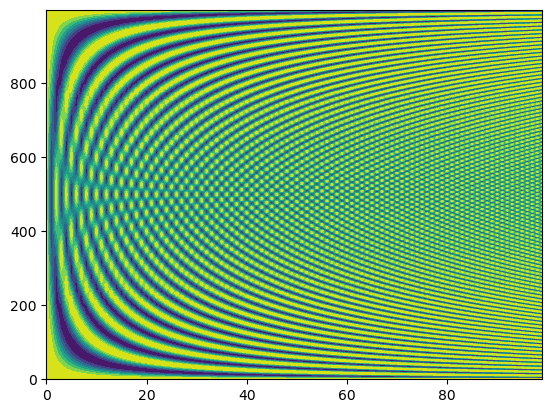
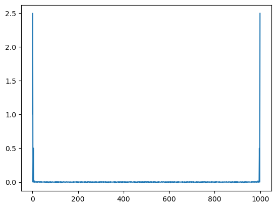
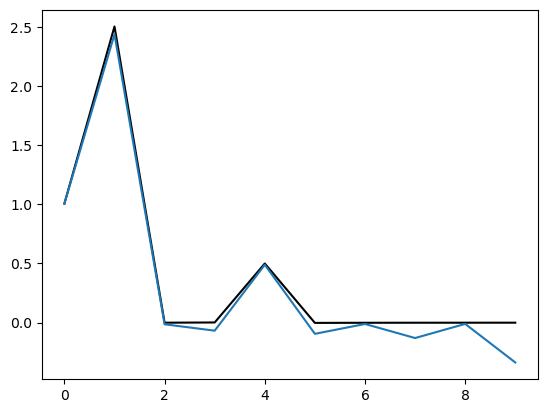
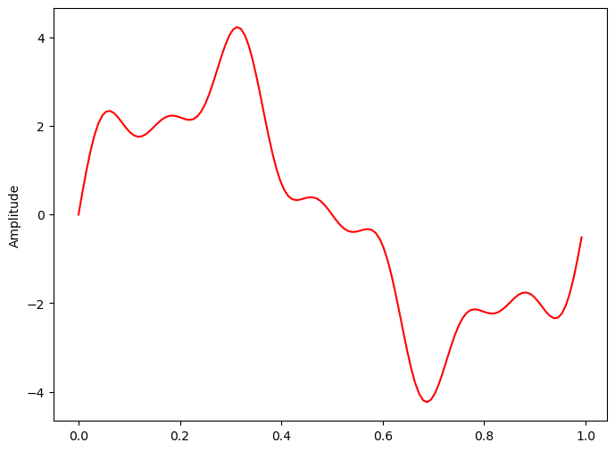

Discrete Fourier Transform
Contents
Discrete Fourier Transform¶
import numpy as np
from matplotlib import pyplot as plt
def fourier(y, number_of_harmonics):
x = np.matrix(np.arange(0,np.size(y)))/np.size(y)*2*3.14159
#
#print(x)
n = np.matrix(np.arange(0,number_of_harmonics))
omega = x.T.dot(n)
cos_coef = np.matrix(y).dot(np.cos(omega))
sin_coef = np.matrix(y).dot(np.sin(omega))
cos_coef = cos_coef/np.size(y)*2
sin_coef = sin_coef/np.size(y)*2
cos_coef[0,0] = cos_coef[0,0]/2
reconstruct = cos_coef.dot(np.cos(omega).T)+sin_coef.dot(np.sin(omega).T)
return cos_coef,sin_coef, reconstruct, omega
x = np.linspace(0,2*3.14159,1000)
y = 1*np.cos(0*x)+5*np.cos(x)+np.cos(4*x)+np.sin(10*x)+np.random.normal(0,0.1,1000)
plt.plot(y)
wave_number = 100
cos_coef,sin_coef,reconstruct, omega = fourier(y,wave_number)
plt.figure()
plt.contourf(np.cos(omega))
# plt.scatter(np.arange(0,wave_number),np.array(cos_coef),s=40)
# plt.scatter(np.arange(0,wave_number),np.array(sin_coef),s=40)
plt.figure()
plt.plot(reconstruct[0,:].T)
plt.plot(y)
print('cos coef=',cos_coef)
print('sin coef=',sin_coef)
plt.figure()
plt.plot(cos_coef)
cos coef= [[ 1.00908565e+00 4.99637600e+00 1.90347171e-03 4.46216479e-03
1.00286473e+00 2.16253761e-03 3.95995359e-04 -2.32038012e-03
1.56427993e-03 -2.43078455e-03 3.42302881e-02 4.39700753e-03
-1.81947718e-04 5.97196333e-04 -5.07547443e-05 -1.43796105e-03
7.39248199e-03 1.95937813e-03 -3.85793128e-03 4.60857261e-04
1.02608539e-02 7.15105035e-03 2.45109820e-03 -7.52636919e-03
7.71779490e-03 2.48353879e-03 7.54274808e-03 5.15986887e-03
8.19157729e-03 1.21913526e-03 -3.55138124e-03 4.79248260e-03
3.05620981e-03 -2.19081732e-03 8.24116341e-04 -3.57271060e-04
1.14110997e-02 -4.91036842e-04 -2.00023097e-03 9.01662868e-03
-1.53465175e-03 -6.00282372e-04 -9.50478578e-04 -1.54580730e-03
1.70309359e-04 7.76225875e-04 2.71839459e-03 -7.85969552e-04
2.62039637e-03 -6.79572305e-04 2.35057778e-03 1.35327736e-03
1.75902520e-03 -3.46938282e-03 5.80976078e-03 6.72197129e-04
-1.07221922e-03 -5.83204719e-03 2.96922371e-03 3.08325470e-03
-4.49513367e-03 -1.41978789e-03 4.79704022e-03 -1.68197009e-03
5.68815546e-03 4.07912937e-05 -2.01197707e-03 4.99272661e-03
8.21369135e-04 -7.05856874e-03 2.39212750e-03 -8.03765514e-03
-1.39567044e-02 -1.14121389e-03 6.19441186e-04 2.42519511e-03
-2.30380614e-03 6.51214309e-03 1.57204944e-03 1.34960197e-03
-6.26988818e-03 5.35583843e-03 3.18572997e-04 -2.46478647e-03
-7.08633163e-03 -4.55200367e-04 2.55885139e-03 -4.64895441e-04
4.84029416e-03 2.85832614e-03 -1.89590731e-03 -4.07717213e-03
2.09143338e-04 -1.54533808e-03 -2.88825830e-03 -2.12444388e-03
-1.43424554e-03 3.89995222e-03 -1.69720119e-05 1.64693404e-03]]
sin coef= [[ 0.00000000e+00 -2.55860871e-02 8.13091750e-04 4.87179676e-03
-1.13491554e-02 3.31134311e-03 -2.66782284e-03 7.34455193e-03
9.99611483e-03 1.12479526e-02 1.00586242e+00 -1.09920255e-02
-6.32672163e-03 -1.97573269e-03 -5.51854228e-03 -3.40912503e-03
-1.66501944e-03 -3.10060026e-03 5.40597206e-03 -1.40297492e-03
-8.45561198e-03 -4.79237873e-03 -1.63135042e-03 1.57888800e-03
-4.90033725e-03 9.65477092e-04 -1.24052478e-03 1.03933252e-02
8.89288824e-03 -5.67380326e-03 -5.75745765e-03 6.11220956e-03
-1.15466393e-04 -1.87737105e-03 2.40612146e-03 1.16192856e-03
4.40975141e-03 4.64413630e-03 -7.71053034e-03 -3.34176834e-03
-3.83300355e-03 -2.85834516e-03 4.37141713e-03 3.83261983e-03
-5.71246734e-03 -4.79807784e-03 3.99971735e-03 3.54739480e-03
6.11650566e-03 -3.81925927e-03 1.33707377e-03 2.50302704e-03
-8.14439572e-04 4.72981395e-03 7.39645199e-03 -5.05051533e-03
8.38540874e-04 1.41417339e-03 -3.07304468e-04 -6.03270076e-04
3.19565708e-03 2.41608440e-03 5.02701698e-03 5.12375518e-03
-8.39310591e-03 5.35125386e-03 3.82133985e-03 2.37525319e-03
4.98626803e-03 3.02051619e-03 2.25326231e-03 5.48840360e-04
-4.68327579e-03 -7.57221706e-04 -1.00937159e-03 -1.51858811e-03
-2.83302112e-03 5.27832212e-03 5.45733896e-05 4.25414879e-04
1.29825882e-02 -3.43246977e-03 1.88514738e-03 9.73071824e-03
6.48738869e-03 1.91505631e-03 3.08681174e-03 -6.66916671e-04
-1.18808866e-03 4.21520421e-04 2.04432103e-03 -2.24719328e-03
-6.65388133e-03 -8.11777996e-03 -3.91147562e-03 -4.04135545e-04
-6.16285787e-03 2.16097586e-03 3.32841197e-04 -2.36226267e-03]]
[<matplotlib.lines.Line2D at 0x10e831a60>,
<matplotlib.lines.Line2D at 0x10e831c10>,
<matplotlib.lines.Line2D at 0x10e831d60>,
<matplotlib.lines.Line2D at 0x10e831eb0>,
<matplotlib.lines.Line2D at 0x10e83d040>,
<matplotlib.lines.Line2D at 0x10e83d190>,
<matplotlib.lines.Line2D at 0x10e8219a0>,
<matplotlib.lines.Line2D at 0x10e83d310>,
<matplotlib.lines.Line2D at 0x10e83d460>,
<matplotlib.lines.Line2D at 0x10e83d5b0>,
<matplotlib.lines.Line2D at 0x10e831ac0>,
<matplotlib.lines.Line2D at 0x10e83d820>,
<matplotlib.lines.Line2D at 0x10e83d970>,
<matplotlib.lines.Line2D at 0x10e83dac0>,
<matplotlib.lines.Line2D at 0x10e83dc10>,
<matplotlib.lines.Line2D at 0x10e83dd60>,
<matplotlib.lines.Line2D at 0x10e83deb0>,
<matplotlib.lines.Line2D at 0x10e842040>,
<matplotlib.lines.Line2D at 0x10e842190>,
<matplotlib.lines.Line2D at 0x10e8422e0>,
<matplotlib.lines.Line2D at 0x10e842430>,
<matplotlib.lines.Line2D at 0x10e842580>,
<matplotlib.lines.Line2D at 0x10e8426d0>,
<matplotlib.lines.Line2D at 0x10e842820>,
<matplotlib.lines.Line2D at 0x10e842970>,
<matplotlib.lines.Line2D at 0x10e842ac0>,
<matplotlib.lines.Line2D at 0x10e842c10>,
<matplotlib.lines.Line2D at 0x10e842d60>,
<matplotlib.lines.Line2D at 0x10e842eb0>,
<matplotlib.lines.Line2D at 0x10e848040>,
<matplotlib.lines.Line2D at 0x10e848190>,
<matplotlib.lines.Line2D at 0x10e8482e0>,
<matplotlib.lines.Line2D at 0x10e848430>,
<matplotlib.lines.Line2D at 0x10e848580>,
<matplotlib.lines.Line2D at 0x10e8486d0>,
<matplotlib.lines.Line2D at 0x10e848820>,
<matplotlib.lines.Line2D at 0x10e848970>,
<matplotlib.lines.Line2D at 0x10e848ac0>,
<matplotlib.lines.Line2D at 0x10e848c10>,
<matplotlib.lines.Line2D at 0x10e848d60>,
<matplotlib.lines.Line2D at 0x10e848eb0>,
<matplotlib.lines.Line2D at 0x10e84e040>,
<matplotlib.lines.Line2D at 0x10e84e190>,
<matplotlib.lines.Line2D at 0x10e811760>,
<matplotlib.lines.Line2D at 0x10e7d81f0>,
<matplotlib.lines.Line2D at 0x10e7bfc70>,
<matplotlib.lines.Line2D at 0x10e84e370>,
<matplotlib.lines.Line2D at 0x10e84e4c0>,
<matplotlib.lines.Line2D at 0x10e84e610>,
<matplotlib.lines.Line2D at 0x10e84e760>,
<matplotlib.lines.Line2D at 0x10e84e8b0>,
<matplotlib.lines.Line2D at 0x10e84ea00>,
<matplotlib.lines.Line2D at 0x10e84eb50>,
<matplotlib.lines.Line2D at 0x10e84eca0>,
<matplotlib.lines.Line2D at 0x10e84edf0>,
<matplotlib.lines.Line2D at 0x10e84ef40>,
<matplotlib.lines.Line2D at 0x10e8540d0>,
<matplotlib.lines.Line2D at 0x10e854220>,
<matplotlib.lines.Line2D at 0x10e854370>,
<matplotlib.lines.Line2D at 0x10e8544c0>,
<matplotlib.lines.Line2D at 0x10e854610>,
<matplotlib.lines.Line2D at 0x10e854760>,
<matplotlib.lines.Line2D at 0x10e8548b0>,
<matplotlib.lines.Line2D at 0x10e854a00>,
<matplotlib.lines.Line2D at 0x10e854b50>,
<matplotlib.lines.Line2D at 0x10e854ca0>,
<matplotlib.lines.Line2D at 0x10e854df0>,
<matplotlib.lines.Line2D at 0x10e854f40>,
<matplotlib.lines.Line2D at 0x10e85a0d0>,
<matplotlib.lines.Line2D at 0x10e85a220>,
<matplotlib.lines.Line2D at 0x10e85a370>,
<matplotlib.lines.Line2D at 0x10e85a4c0>,
<matplotlib.lines.Line2D at 0x10e85a610>,
<matplotlib.lines.Line2D at 0x10e85a760>,
<matplotlib.lines.Line2D at 0x10e85a8b0>,
<matplotlib.lines.Line2D at 0x10e85aa00>,
<matplotlib.lines.Line2D at 0x10e85ab50>,
<matplotlib.lines.Line2D at 0x10e85aca0>,
<matplotlib.lines.Line2D at 0x10e85adf0>,
<matplotlib.lines.Line2D at 0x10e85af40>,
<matplotlib.lines.Line2D at 0x10e8610d0>,
<matplotlib.lines.Line2D at 0x10e861220>,
<matplotlib.lines.Line2D at 0x10e861370>,
<matplotlib.lines.Line2D at 0x10e8614c0>,
<matplotlib.lines.Line2D at 0x10e861610>,
<matplotlib.lines.Line2D at 0x10e861760>,
<matplotlib.lines.Line2D at 0x10e8618b0>,
<matplotlib.lines.Line2D at 0x10e861a00>,
<matplotlib.lines.Line2D at 0x10e861b50>,
<matplotlib.lines.Line2D at 0x10e861ca0>,
<matplotlib.lines.Line2D at 0x10e861df0>,
<matplotlib.lines.Line2D at 0x10e861f40>,
<matplotlib.lines.Line2D at 0x10e8660d0>,
<matplotlib.lines.Line2D at 0x10e866220>,
<matplotlib.lines.Line2D at 0x10e866370>,
<matplotlib.lines.Line2D at 0x10e8664c0>,
<matplotlib.lines.Line2D at 0x10e866610>,
<matplotlib.lines.Line2D at 0x10e866760>,
<matplotlib.lines.Line2D at 0x10e8668b0>,
<matplotlib.lines.Line2D at 0x10e866a00>]


def dft(y):
y = np.asarray(y, dtype=float)
N = y.shape[0]
n = np.arange(N)
k = n.reshape((N, 1))
M = np.exp(-2j * np.pi * k * n / N)
return np.dot(M, y)/np.size(y)
plt.plot(dft(y))
y_hat = np.matrix(dft(y))
print(y_hat.dot((y_hat.conjugate()).T))
print(np.var(y))
[[14.51966071+2.17598316e-18j]]
13.50140686081166
/Users/Shared/miniconda3/envs/default_env2/lib/python3.9/site-packages/matplotlib/cbook/__init__.py:1298: ComplexWarning: Casting complex values to real discards the imaginary part
return np.asarray(x, float)

Gibbs phenomenon¶
y = np.cos(0*x)+5*np.cos(x)+np.cos(4*x)+np.sin(10*x)
plt.plot(dft(y)[0:10],'k')
# maskout the data by half
y[0:500] = 0
plt.plot(dft(y)[0:10]*2)
/Users/Shared/miniconda3/envs/default_env2/lib/python3.9/site-packages/matplotlib/cbook/__init__.py:1298: ComplexWarning: Casting complex values to real discards the imaginary part
return np.asarray(x, float)
/Users/Shared/miniconda3/envs/default_env2/lib/python3.9/site-packages/matplotlib/cbook/__init__.py:1298: ComplexWarning: Casting complex values to real discards the imaginary part
return np.asarray(x, float)
[<matplotlib.lines.Line2D at 0x10eb2aa60>]

Fast Fourier Transform¶
import numpy as np
def fft(x):
N = len(x)
if N <= 1:
return x
even = fft(x[0::2])
odd = fft(x[1::2])
T = [np.exp(-2j * np.pi * k / N) * odd[k] for k in range(N // 2)]
return [even[k] + T[k] for k in range(N // 2)] + \
[even[k] - T[k] for k in range(N // 2)]
def fft_recursive(x):
N = len(x)
if N % 2 > 0:
raise ValueError("Length of input must be a power of 2")
elif N <= 32:
return fft(x)
else:
even = fft_recursive(x[0::2])
odd = fft_recursive(x[1::2])
T = [np.exp(-2j * np.pi * k / N) * odd[k] for k in range(N // 2)]
return [even[k] + T[k] for k in range(N // 2)] + \
[even[k] - T[k] for k in range(N // 2)]
def main():
x = np.random.random(1024)
#print("Input sequence:", x)
y = fft_recursive(x)
#print("FFT result:", y)
if __name__ == "__main__":
main()
def FFT(x):
"""
A recursive implementation of
the 1D Cooley-Tukey FFT, the
input should have a length of
power of 2.
"""
N = len(x)
if N == 1:
return x
else:
X_even = FFT(x[::2])
X_odd = FFT(x[1::2])
factor = np.exp(-2j*np.pi*np.arange(N)/ N)
X = np.concatenate(\
[X_even+factor[:int(N/2)]*X_odd,
X_even+factor[int(N/2):]*X_odd])
return X
# sampling rate
sr = 128
# sampling interval
ts = 1.0/sr
t = np.arange(0,1,ts)
freq = 1.
x = 3*np.sin(2*np.pi*freq*t)
freq = 4
x += np.sin(2*np.pi*freq*t)
freq = 7
x += 0.5* np.sin(2*np.pi*freq*t)
plt.figure(figsize = (8, 6))
plt.plot(t, x, 'r')
plt.ylabel('Amplitude')
plt.show()

%timeit X=FFT(x)
%timeit dft(x)
# calculate the frequency
N = len(X)
n = np.arange(N)
T = N/sr
freq = n/T
plt.figure(figsize = (12, 6))
plt.subplot(121)
plt.stem(freq, abs(X), 'b', \
markerfmt=" ", basefmt="-b")
plt.xlabel('Freq (Hz)')
plt.ylabel('FFT Amplitude |X(freq)|')
# Get the one-sided specturm
n_oneside = N//2
# get the one side frequency
f_oneside = freq[:n_oneside]
# normalize the amplitude
X_oneside =X[:n_oneside]/n_oneside
plt.subplot(122)
plt.stem(f_oneside, abs(X_oneside), 'b', \
markerfmt=" ", basefmt="-b")
plt.xlabel('Freq (Hz)')
plt.ylabel('Normalized FFT Amplitude |X(freq)|')
plt.tight_layout()
plt.show()
613 µs ± 2.21 µs per loop (mean ± std. dev. of 7 runs, 1,000 loops each)
255 µs ± 75.3 ns per loop (mean ± std. dev. of 7 runs, 1,000 loops each)
---------------------------------------------------------------------------
NameError Traceback (most recent call last)
Cell In [7], line 4
2 get_ipython().run_line_magic('timeit', 'dft(x)')
3 # calculate the frequency
----> 4 N = len(X)
5 n = np.arange(N)
6 T = N/sr
NameError: name 'X' is not defined
import numpy as np
def fft(x):
N = len(x)
if N <= 1:
return x
even = fft(x[::2])
odd = fft(x[1::2])
T = [np.exp(-2j * np.pi * k / N) * odd[k] for k in range(N // 2)]
return [even[k] + T[k] for k in range(N // 2)] + \
[even[k] - T[k] for k in range(N // 2)]
import numpy as np
import matplotlib.pyplot as plt
# Generate a sinusoidal signal with noise
t = np.linspace(0, 1, 1000)
f_signal = 5 # Frequency of the signal
signal = np.sin(2 * np.pi * f_signal * t) + 0.5 * np.random.randn(1000) # Adding noise
# Compute FFT
fft_result = np.fft.fft(signal)
frequencies = np.fft.fftfreq(len(signal), t[1] - t[0])
# Plot the original signal
plt.figure(figsize=(10, 6))
plt.subplot(2, 1, 1)
plt.plot(t, signal)
plt.title('Original Signal')
plt.xlabel('Time')
plt.ylabel('Amplitude')
# Plot the FFT result (scaled properly)
plt.subplot(2, 1, 2)
plt.plot(frequencies, np.abs(fft_result) / len(signal)) # Normalize FFT by the length of the signal
plt.title('FFT of Signal')
plt.xlabel('Frequency')
plt.ylabel('Magnitude')
plt.xlim(0, 10) # Limiting x-axis to frequencies up to 10 Hz for clarity
plt.tight_layout()
plt.show()